Porównanie z makietami
Etap 5, smoke operatora (docs/operator/2026-10-27-etap-5-aplikacja-wyceny-smoke.md). Po lewej makieta z Figmy, po prawej zrzut aplikacji z E2E (szerokość 768 px). Kolory aplikacji idą za tokenami wariantu B, więc różnią się od makiety celowo; oceniaj układ, kolejność i teksty. Wynik każdej pary odhacz w pliku smoke'a.
Ustawienia firmy
Smoke, punkt 2 · trasa #/ustawienia
- Sekcje dodane w późniejszych fazach: „Plan a fakt” pod „Tempo pracy” (po pierwszym wpisie czasu), „Zakres prac” i „Warunki oferty”.
- Dolne menu w połowie zrzutu to artefakt zrzutu całej strony (
position: fixed); na telefonie stoi na dole ekranu.
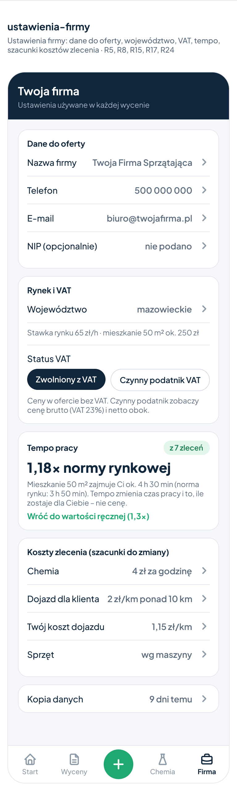
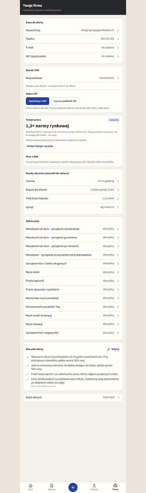
Ekran startowy
Smoke, punkt 4 · stan wyceny-do-zrobienia
- Kolejność sekcji: nagłówek, dwa kafle wyceny, karta miesiąca z tempem, „Do zrobienia”, baner kopii, dolne menu.
- Teksty i statusy jak w makiecie.
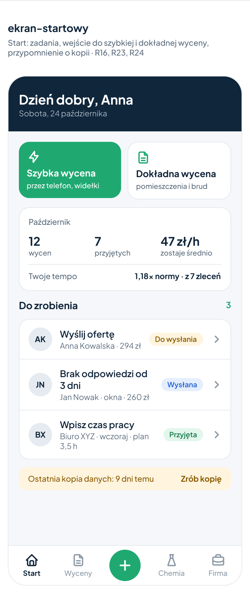
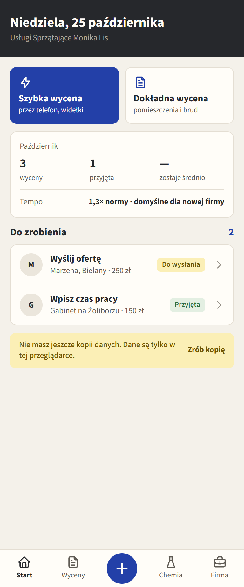
Szybka wycena
Smoke, punkt 5 · mieszkanie standard 50 m², typowy, mazowieckie
- Zaplanowane odstępstwa: pigułka „Zostaje ok. 47 zł/h” i zwijane „AGD i dodatki”.
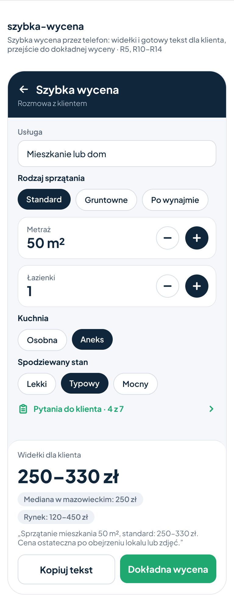
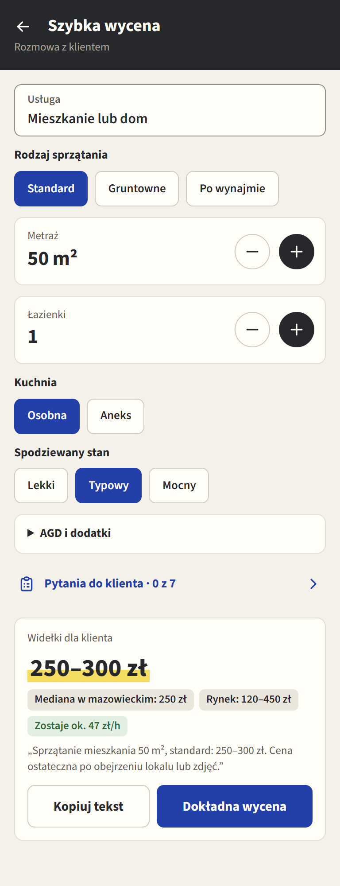
Pytania do klienta
Smoke, punkt 6 · szybka wycena 50 m², zwierzęta „Tak”, dojazd 32 km
- Oceń kolejność pytań (z
data/pytania.json) i pełną nazwę usługi w podtytule.
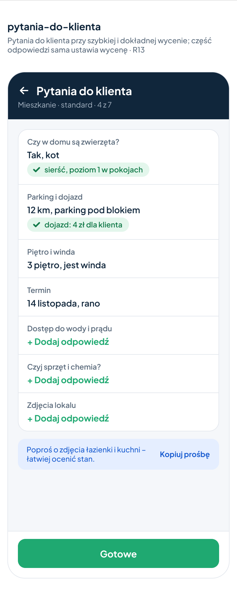
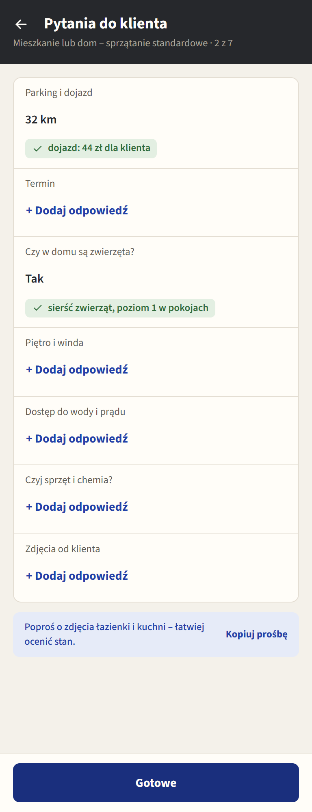
Edycja oferty
Smoke, punkt 8 · stan wyceny-do-zrobienia
- Karty „Twoja firma”, „Klient i termin”, „Zakres prac”, „Warunki”, „Oferta ważna do” i stopka „PDF” / „Kopiuj link”.
- Brak karty „Dodatki” jest prawidłowy (wycena bez propozycji); makieta ma kolory spoza tokenów wariantu B.
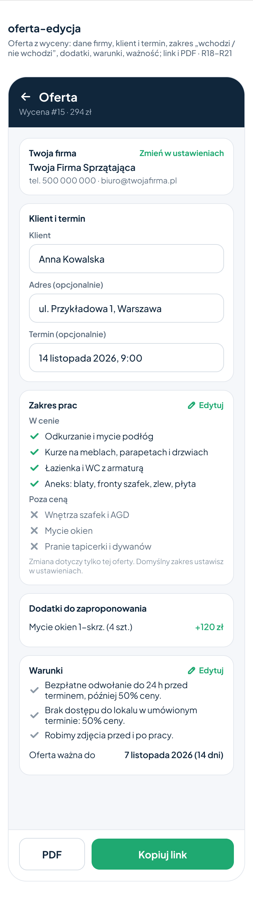
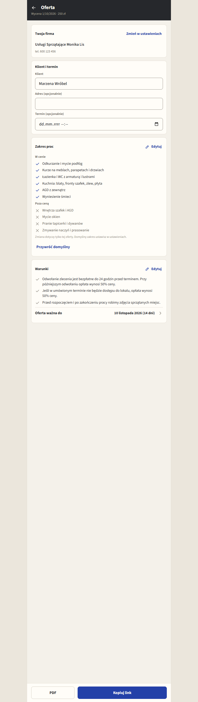
Oferta u klienta
Smoke, punkt 9 · zrzut bez dojazdu i „Możesz dobrać”
- Zatwierdź brzmienie warunków albo spisz poprawki.
- Pełny wariant (z dojazdem, dodatkami i po terminie ważności) jest pod parą.
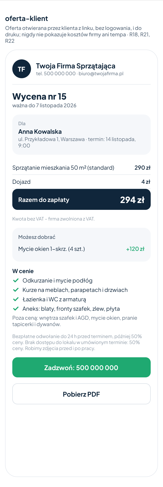
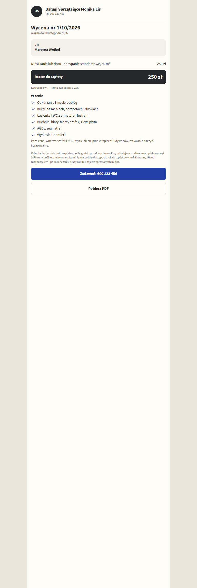
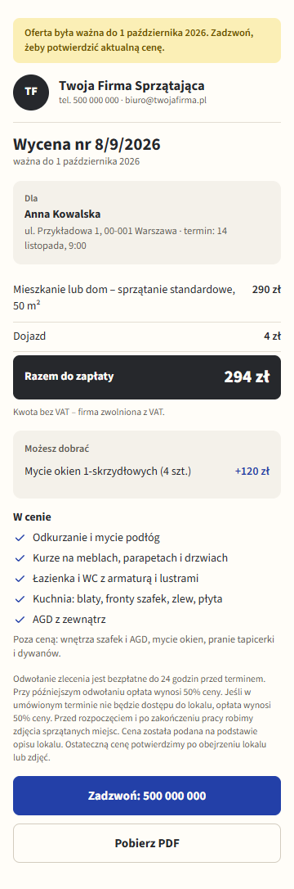
Zakończenie zlecenia
Smoke, punkt 10 · licznik 5 h 30 min
- Oceń, czy „Zostało dla Ciebie” 235 zł przy planie i przy fakcie, gdy zmienia się tylko stawka (47 → 43 zł/h), jest zrozumiałe.
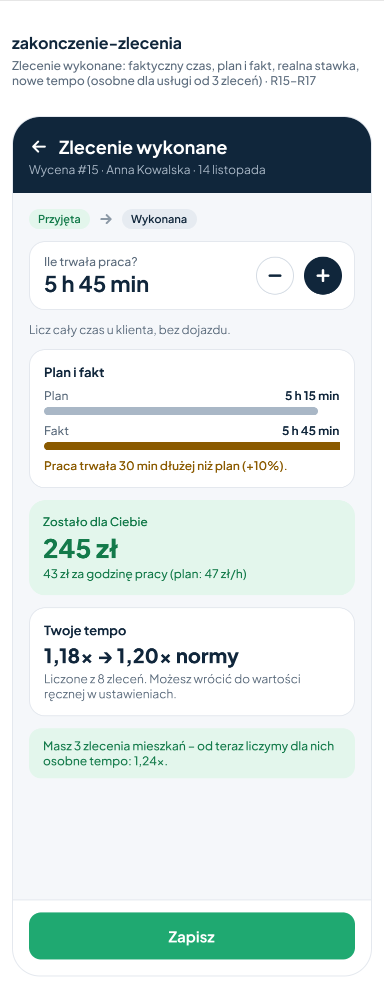
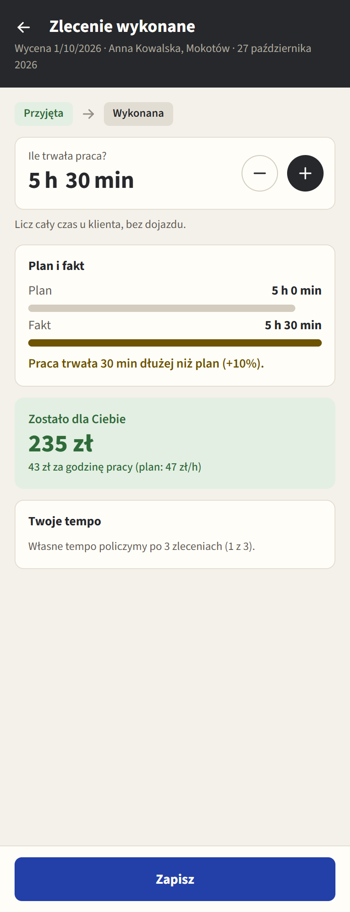
Kopia zapasowa
Smoke, punkt 11 · stan wyceny-do-zrobienia
- Pigułka liczy tylko wykonane zlecenia (wpisy czasu pracy). Po decyzji z 2026-10-28 napis brzmi „N wykonanych zleceń”; zrzut jest sprzed tej zmiany.
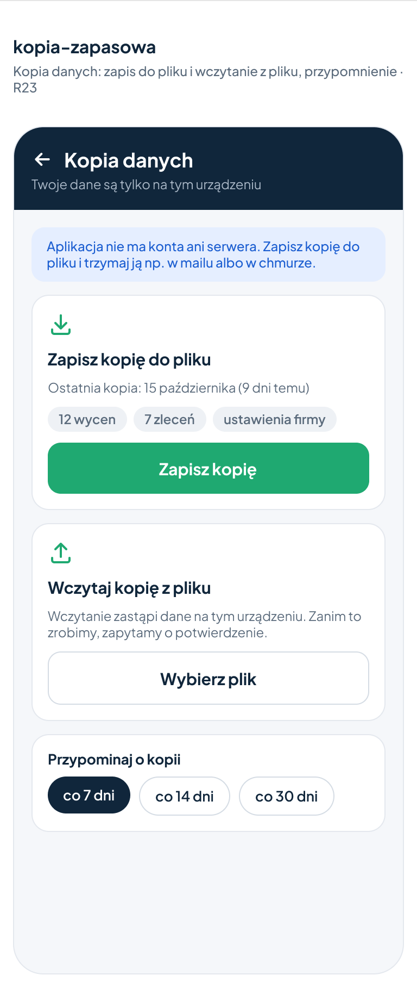
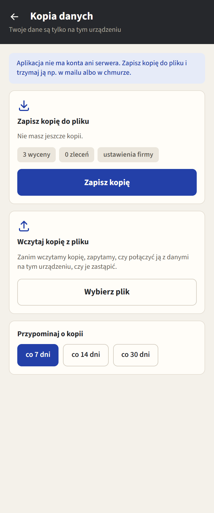